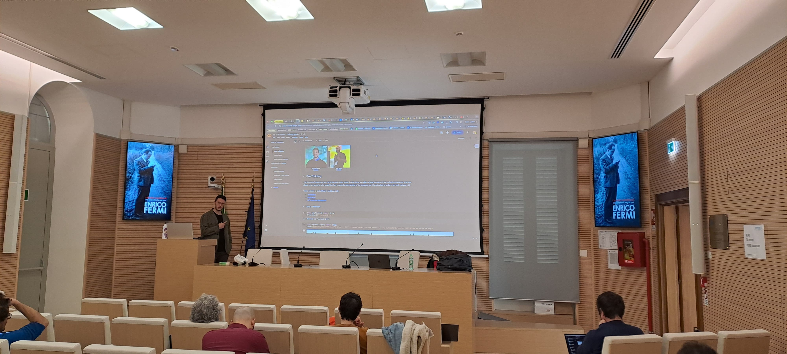

Enrico Fermi Research Centre 2025
2025 · LLM, Physics

Course Programme
This is the updated syllabus of the course
Outline: Deep Dive into LLMs (5 days)
Module 1: Review of Deep Learning
Instructor: Cristiano De Nobili
Duration: 6 hours, 10-13, 14-17, March 4, 2025
Libraries: Pytorch, Hugging Face
- Deep Learning Foundations: neural nets, activation functions, backpropagation, optimization methods, training phases;
- Pytorch Fundamentals: code, train, and evaluate a neural net;
- Advanced Deep Learning Exercise.
Module 2: Modern NLP and the Transformer
Instructor: Cristiano De Nobili
Duration: 6 hours, 10-13, 14-17, March 5, 2025
Libraries: Pytorch, Hugging Face
- Language complexity and NLP intro;
- Tokenizations, Embeddings, Embedding Similarities;
- Training phases: pre-training (self-supervised), supervised fine-tuning, etc;
- Encoders, decoders and the Transformer Architecture;
- Decoder-only Autoregressive architectures: GPT-2;
- Encoder-only architectures: BERT;
- Downstream tasks: NER, keyword extraction and topic modeling.
Module 3: Intro to Large Language Models and Training
Instructor: Marcello Politi, Àlex R. Atrio
Duration: 6 hours, 10-13, 14-17, March 11, 2025
- Intro to LLMs
- SOTA and prompt engineering
- Training, fine-tuning, PeFT, visualization tools
Module 4: AI Agents 101
Instructor: Marcello Politi, Àlex R. Atrio
Duration: 6 hours, 10-13, 14-17, March 12, 2025
- Continue with SFT
- Text extraction
- Arxiv training exercise / explain solution
- API finetuning: GPT and Mistral
- RAG
- Evaluation
Module 5: Advanced topics
Instructor: Marcello Politi, Àlex R. Atrio
Duration: 6 hours, 10-13, 14-17, March 18, 2025
- Hallucinations and miscellaneous
- Synth data generation
- LLM powered GUI App (streamlit)
- Explainable AI - Captum
- Hallucination detection exercise
- Multimodal LLMs
- Compliance
- Survey: https://shorturl.at/UrEy9